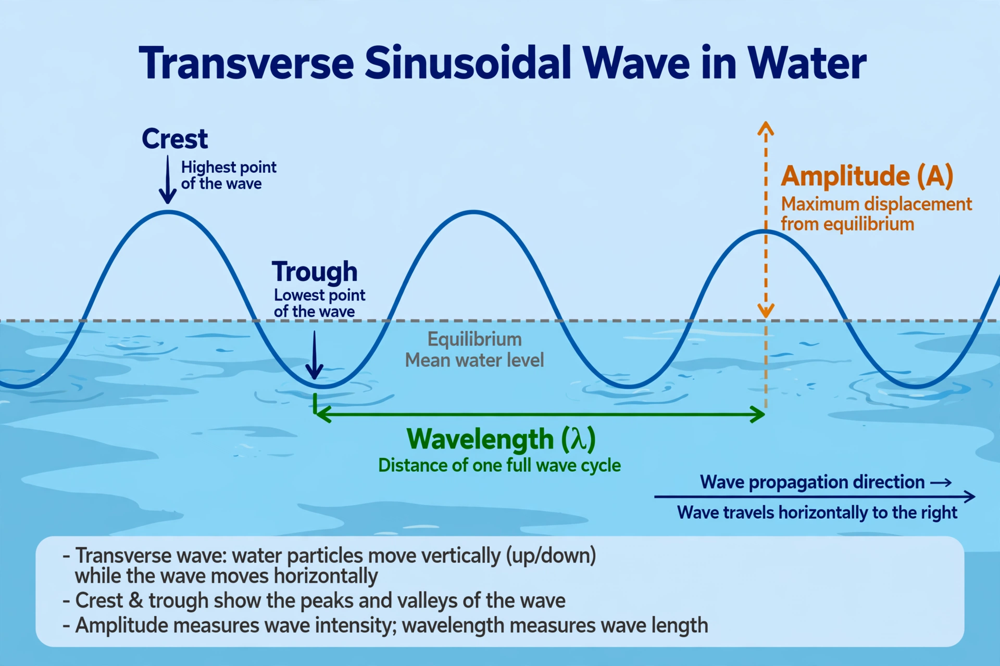

Wave
In physics, mathematics, engineering, and related fields, a wave is a propagating dynamic disturbance (change from equilibrium) of one or more quantities. Waves can be periodic, in which case those quantities oscillate repeatedly about an equilibrium (resting) value at some frequency. If the entire waveform moves in one direction, it is said to be a travelling wave; by contrast, a pair of superimposed periodic waves travelling in opposite directions makes a standing wave.

| Wave properties | |
|---|---|
| Amplitude | Maximum displacement from equilibrium |
| Wavelength (λ) | Distance between repeating points |
| Frequency (f) | Oscillations per unit time |
| Speed (v) | v = fλ |
Types of waves
Mechanical waves travel through a material medium — solid, liquid, gas, or plasma — and include sound waves, water waves, and seismic waves. In a transverse wave, such as a wave on a string, the disturbance is perpendicular to the direction of propagation. In a longitudinal wave, such as sound in air, the disturbance is parallel to the direction of travel, producing compressions and rarefactions.
Electromagnetic waves — including radio waves, microwaves, visible light, and gamma rays — consist of oscillating electric and magnetic fields and can travel through a vacuum at the speed of light. Matter waves describe the wave-like behaviour of particles in quantum mechanics, and gravitational waves are ripples in spacetime predicted by general relativity and first directly detected in 2015.
Wave equation
Many kinds of wave motion are described by the wave equation, a second-order linear partial differential equation stating that the acceleration of the disturbance is proportional to its spatial curvature. Solutions include sinusoidal plane waves characterised by amplitude, wavelength, frequency, and phase. Waves exhibit reflection, refraction, diffraction, interference, and polarisation, and their behaviour at boundaries between media underlies much of optics and acoustics.